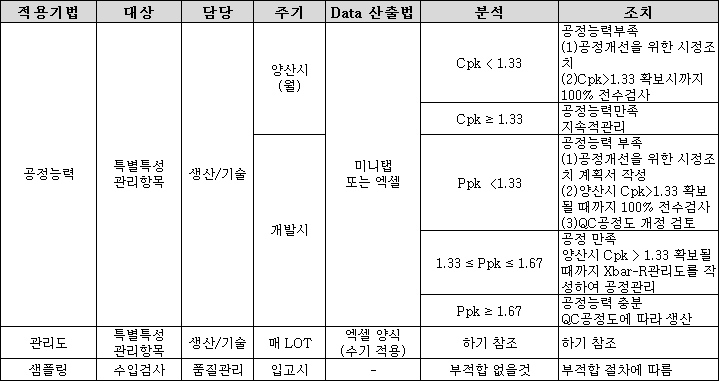
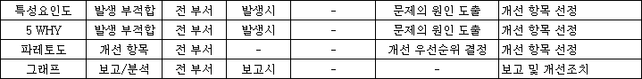
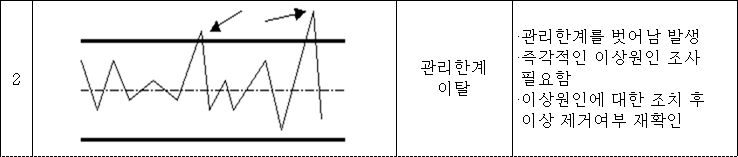
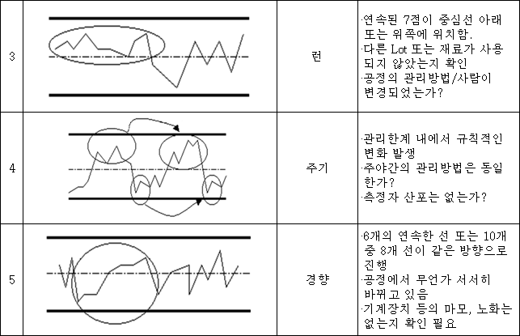
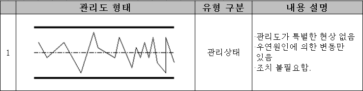
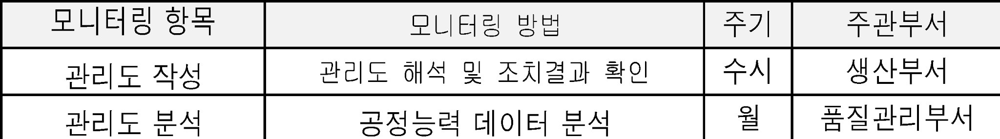

| 검사 프 로 세 스 | 문서번호 | ||||||||||||||||||||||||||||||||||||||||
| 통계적품질관리 지침 | MI-0808 | ||||||||||||||||||||||||||||||||||||||||
| 작 성 팀 | 발 행 팀 | 제 정 일 자 | 작성 | 검토 | 승인 | ||||||||||||||||||||||||||||||||||||
| 품질팀 | 품질팀 | 2025-05-28 | 결재完 | 결재完 | 결재完 | ||||||||||||||||||||||||||||||||||||
| NO | 개 정 일 자 | 개 정 사 유 | 개 정 쪽 | 비 고 | |||||||||||||||||||||||||||||||||||||
| 0 | 2025-05-28 | ||||||||||||||||||||||||||||||||||||||||
| 1 | |||||||||||||||||||||||||||||||||||||||||
| 통계적품질관리 지침 | 문서 번호 | MI-0808 | |||||||||||||||||||||||||||||||||||||||||
| 쪽 | 1 | ||||||||||||||||||||||||||||||||||||||||||
| 제정 일자 | 2025-05-28 | 개정 번호 | 1 | 개정 일자 | 2025-05-28 | 시행일자 | 2025-05-28 | ||||||||||||||||||||||||||||||||||||
| 1. 적용범위 | |||||||||||||||||||||||||||||||||||||||||||
| 본 절차는 당사의 공정능력 및 제품 특성을 설정, 관리 및 검증하는데 필요한 통계적 기법의 활용을 | |||||||||||||||||||||||||||||||||||||||||||
| 통하여 지속적 개선을 위하여 적용한다. | |||||||||||||||||||||||||||||||||||||||||||
| 공정의 산포, 공정능력의 과잉 조정 등 기본적인 통계적인 개념을 가질 수 있도록 통계적 기법을 교육 | |||||||||||||||||||||||||||||||||||||||||||
| 훈련시켜서, 분석자료에 대해서 기설정된 목표와 부합되는지 여부를 확인하고 데이터에 기반하여 | |||||||||||||||||||||||||||||||||||||||||||
| 그에 상응하는 신속한 시정조치를 계획/실행하여 품질 안정화를 빠른 시일내에 달성할 수 있도록 | |||||||||||||||||||||||||||||||||||||||||||
| 하기 위함이다. | |||||||||||||||||||||||||||||||||||||||||||
| 2. 목 적 | |||||||||||||||||||||||||||||||||||||||||||
| 본 절차서는 제조 공정, 제품, 시스템의 효과성 및 효율성을 측정, 분석 및 개선하기 위한 수단 | |||||||||||||||||||||||||||||||||||||||||||
| 으로써 통계적 기법을 활용하여 지속적 개선 활동에 활용하는데 그 목적이 있다. | |||||||||||||||||||||||||||||||||||||||||||
| 3. 용어의 정의 | |||||||||||||||||||||||||||||||||||||||||||
| 3.1 통계적 기법 | |||||||||||||||||||||||||||||||||||||||||||
| 업무의 관리항목, 통계적 공정 및 관리 상태를 그래프, 특성요인도, 관리도, 히스토그램 등으로 | |||||||||||||||||||||||||||||||||||||||||||
| 분석하여 공정능력 및 관리능력을 향상시키기 위해 활용하는 기법을 말한다. | |||||||||||||||||||||||||||||||||||||||||||
| 3.2 관리도 | |||||||||||||||||||||||||||||||||||||||||||
| 공정 특성치를 나타낸 그래프로 공정의 이상과 정상을 판단하기 위해 관리선을 기준으로 통계적 | |||||||||||||||||||||||||||||||||||||||||||
| 측정값을 시각적으로 나타낸 도표를 말한다. | |||||||||||||||||||||||||||||||||||||||||||
| 3.3 샘플링 검사 | |||||||||||||||||||||||||||||||||||||||||||
| Lot로부터 미리 정한 샘플링 검사 방식에 따라 시료를 샘플링 검사하여 합부 판정하는 검사를 | |||||||||||||||||||||||||||||||||||||||||||
| 말한다. | |||||||||||||||||||||||||||||||||||||||||||
| 3.4 파레토도 | |||||||||||||||||||||||||||||||||||||||||||
| 불량, 결점, 클레임, 고장 등의 발생 건수 또는 금액을 그 현상이나 원인별로 나누어 많은 | |||||||||||||||||||||||||||||||||||||||||||
| 차례로 늘어놓아 그 크기를 막대그래프로 나타낸 도표를 말한다. | |||||||||||||||||||||||||||||||||||||||||||
| 3.5 체크시트 | |||||||||||||||||||||||||||||||||||||||||||
| 계수치의 데이터가 분류 항목별의 어디에 집중하고 있는가를 알아보기 쉽게 표시한 도표를 | |||||||||||||||||||||||||||||||||||||||||||
| 말한다. | |||||||||||||||||||||||||||||||||||||||||||
| 3.6 특성요인도 | |||||||||||||||||||||||||||||||||||||||||||
| 주요 문제에 대한 원인을 분석하기 위해 주요인별 (4M1E1J)로 세부 원인을 추적함으로써 | |||||||||||||||||||||||||||||||||||||||||||
| 문제 해결을 쉽게하기 위한 도표를 말한다. | |||||||||||||||||||||||||||||||||||||||||||
| 3.7 히스토그램 | |||||||||||||||||||||||||||||||||||||||||||
| 측정치가 존재하는 범위를 몇개의 구간으로 나눈경우, 각 구간을 저변으로 하고 그 구간에 | |||||||||||||||||||||||||||||||||||||||||||
| 속한 측정치의 출현도에 비례하는 면적을 갖는 기둥(직사각형)을 나열한 그림을 말한다. | |||||||||||||||||||||||||||||||||||||||||||
| 3.8 층별 | |||||||||||||||||||||||||||||||||||||||||||
| 측정치를 요인별로 나눈 것을 말한다. | |||||||||||||||||||||||||||||||||||||||||||
| 3.9 4M | |||||||||||||||||||||||||||||||||||||||||||
| 제품 생산에 필요한 장비, 재료, 제조공법, 작업자를 말한다. | |||||||||||||||||||||||||||||||||||||||||||
| 4. 책임과 권한 | |||||||||||||||||||||||||||||||||||||||||||
| 4.1 품질관리 부서장 | |||||||||||||||||||||||||||||||||||||||||||
| 4.1.1 통계적 기법의 적용 및 관리 | |||||||||||||||||||||||||||||||||||||||||||
| 4.1.2 통계적 기법 교육훈련 필요성 파악 및 교육 시행 | |||||||||||||||||||||||||||||||||||||||||||
| 4.1.3 품질분석 보고서 작성 | |||||||||||||||||||||||||||||||||||||||||||
| 4.1.4 개선테마 선정 및 활동에 대한 확인/평가 | |||||||||||||||||||||||||||||||||||||||||||
| 4.2 생산 부서장 | |||||||||||||||||||||||||||||||||||||||||||
| 4.2.1 통계적 기법 적용 및 모니터링 | |||||||||||||||||||||||||||||||||||||||||||
| 4.2.2 개선테마에 대한 시행 및 효과파악 | |||||||||||||||||||||||||||||||||||||||||||
| 4.3 설비관리 부서장 | |||||||||||||||||||||||||||||||||||||||||||
| 4.3.1 생산설비 관리 및 안정된 공정을 유지하는데 필요한 통계적 기법을 활용하여 분석. | |||||||||||||||||||||||||||||||||||||||||||
| 4.3.2 생산설비의 예방점검, 정기검사 시 발생되는 데이터를 관리 분석하기 위해 적절한 통계적 | |||||||||||||||||||||||||||||||||||||||||||
| 기법을 활용하여 분석하고 이상공정 발생시 즉시 F/Back 실시. | |||||||||||||||||||||||||||||||||||||||||||
| 4.4 관련 부서장 | |||||||||||||||||||||||||||||||||||||||||||
| 4.4.1 통계적 기법의 필요성을 파악하고 주요 업무의 관리항목을 설정, 통계적 기법 활용, 분석. | |||||||||||||||||||||||||||||||||||||||||||
| 4.4.2 통계적 기법이 적용되는 공정 또는 업무를 파악하며, 적용되는 통계적 기법의 이해. | |||||||||||||||||||||||||||||||||||||||||||
| 4.4.3 제조팀장의 요청시 원인 파악 및 개선 지원 | |||||||||||||||||||||||||||||||||||||||||||
| 5. 업무 처리 절차 | |||||||||||||||||||||||||||||||||||||||||||
| 첨부1 업무 처리 절차 참조 | |||||||||||||||||||||||||||||||||||||||||||
| 6. 통계적 공정관리 일반사항 | |||||||||||||||||||||||||||||||||||||||||||
| 6.1 통계적 기법의 파악 및 적용 | |||||||||||||||||||||||||||||||||||||||||||
| 6.1.1 개발/양산 단계에서 제품 및 공정 특성을 관리하기 위하여 | |||||||||||||||||||||||||||||||||||||||||||
| 6.1.2 4M 변경 초도품 평가를 위하여 | |||||||||||||||||||||||||||||||||||||||||||
| 6.1.3 공정 안정상태 및 공정이 관리 능력하에 있는지 여부를 조사/분석하기 위하여 | |||||||||||||||||||||||||||||||||||||||||||
| 6.1.4 시정 및 예방조치를 위한 문제해결 단계에서 현상파악, 원인분석, 대책검증 및 효과 파악을 | |||||||||||||||||||||||||||||||||||||||||||
| 위하여 | |||||||||||||||||||||||||||||||||||||||||||
| 6.1.5 업무 수행 결과 및 성과 분석 보고시 | |||||||||||||||||||||||||||||||||||||||||||
| 또는 정해진 체크 방법에 의해 기록하여야 한다. | |||||||||||||||||||||||||||||||||||||||||||
| 6.2 개발단계에서 결정된 통계적 기법은 FMEA 및 관리계획서의 관리 방법에서 식별하도록 하여야 | |||||||||||||||||||||||||||||||||||||||||||
| 한다. | |||||||||||||||||||||||||||||||||||||||||||
| 6.3 당사에서 사용하는 통계적 기법은 하기와 같다. | |||||||||||||||||||||||||||||||||||||||||||
| 6.4 관리도의 해석 | |||||||||||||||||||||||||||||||||||||||||||
| 당사 현장에서 주로 사용하는 X Bar-R 관리도의 해석 방법은 하기와 같다. | |||||||||||||||||||||||||||||||||||||||||||
| 6.5 통계적 기법을 이용한 개선 활동 | |||||||||||||||||||||||||||||||||||||||||||
| 품질관리 부서는 Data 분석 결과 발생하는 문제점에 대하여 단시일 내 해결이 가능한 문제는 | |||||||||||||||||||||||||||||||||||||||||||
| 시정 및 예방조치 절차에 준하여 처리한다. 문제의 장기적 개선이 필요한 경우, 개선 테마를 선정 | |||||||||||||||||||||||||||||||||||||||||||
| 한다. 개선테마의 선정 기준은 다음과 같다. | |||||||||||||||||||||||||||||||||||||||||||
| 6.5.1 구매품 : 재발 부품불량 유형에 대해 해당 외주업체에 개선 요청 | |||||||||||||||||||||||||||||||||||||||||||
| 6.5.2 가공공정 : CNC 가공라인의 Chuck 평탄도, 내경 및 연관치수의 부적합 유형 | |||||||||||||||||||||||||||||||||||||||||||
| 6.5.3 Lapping/Polishing 공정 : 평탄도, 표면조도, 두께 편차 등 결함 유형 | |||||||||||||||||||||||||||||||||||||||||||
| 6.5.4 품질팀은 재발 및 다발 품질문제에서 선정된 개선테마를 해당 부서에 송부한다. | |||||||||||||||||||||||||||||||||||||||||||
| 6.5.5 해당 부서는 개선테마에 대한 개선계획을 수립 후 개선을 실시한다. | |||||||||||||||||||||||||||||||||||||||||||
| 7. 프로세스 모니터링 | |||||||||||||||||||||||||||||||||||||||||||
| 8. 기록 | |||||||||||||||||||||||||||||||||||||||||||
| 본 절차에 따른 기록은 사내 기록 관리절차에 따라 관리한다. | |||||||||||||||||||||||||||||||||||||||||||
| 9. 첨부 | |||||||||||||||||||||||||||||||||||||||||||
| 9.1 업무처리절차 | |||||||||||||||||||||||||||||||||||||||||||
| 9.2 통계적기법 | |||||||||||||||||||||||||||||||||||||||||||






| 5. 업무 처리 절차 | ||||||||||||||||||||||||
| 단계 | 입력 | 업무절차 | 출력 | 담당 | 전결권자 | 비고 | ||||||||||||||||||
| 업무수행시 통계 | 통계적 기법의 | 관련부서 | 부서장 | |||||||||||||||||||||
| 적 기법의 필요성 | 사용 대상 | |||||||||||||||||||||||
| 기법파악 | ||||||||||||||||||||||||
| 통계적 기법의 | 교육훈련계획 | 관련부서 | 부서장 | |||||||||||||||||||||
| 사용 대상 | 교육결과보고서 | |||||||||||||||||||||||
| 통계적 기법 | 관리계획서 | 관련부서 | 부서장 | |||||||||||||||||||||
| FMEA | ||||||||||||||||||||||||
| 통계적 | 관리계획서 | SPC DATA | 품질담당 | 부서장 | ||||||||||||||||||||
| 기법 적용 | FMEA | 생산담당 | ||||||||||||||||||||||
| SPC DATA | 분석 자료 | 품질담당 | 부서장 | |||||||||||||||||||||
| (특별특성항목) | ||||||||||||||||||||||||
| 분석 자료 | 시정조치 요구서 | 해당부서 | 부서장 | |||||||||||||||||||||
| 담당 | ||||||||||||||||||||||||
| 이상조치 | ||||||||||||||||||||||||
| 시정조치 요구서 | 개선대책서 | 해당부서 | 부서장 | |||||||||||||||||||||
| 담당 | ||||||||||||||||||||||||
| 개선대책서 | 유효성 결과 | 품질담당 | 부서장 | |||||||||||||||||||||
| 개선대책서 | 품질담당 | 부서장 | ||||||||||||||||||||||
| 사후관리 | 유효성 결과 | |||||||||||||||||||||||
START
통계적 기법의 파악
통계적 기법 교육
관련 문서 개정
(CP, FMEA)
통계적 기법 적용
(Data 수집)
분석/
이상 발생?
No
Yes
END
원인 분석
개선테마 선정
시정 및 예방조치
개선 활동
유효성
사후관리/지속적 개선
Yes
No
| 당사에서 사용하는 통계적 기법 | |||||||
| 적용기법 | 대상 | 담당 | 주기 | Data 산출법 | 분석 | 조치 | |
| 공정능력 | 생산/기술 | Cpk＜ 1.33 | |||||
| Cpk ≥ 1.33 | |||||||
| 개발시 | Ppk ＜1.33 | ||||||
| 1.33 ≤ Ppk ≤ 1.67 | |||||||
| Ppk ≥ 1.67 | |||||||
| 관리도 | 생산/기술 | 매 LOT | 하기 참조 | 하기 참조 | |||
| 샘플링 | 수입검사 | 품질관리 | 입고시 | - | 부적합 없을것 | 부적합 절차에 따름 | |
| 특성요인도 | 발생 부적합 | 전 부서 | 발생시 | - | 문제의 원인 도출 | 개선 항목 선정 | |
| 5 WHY | 발생 부적합 | 전 부서 | 발생시 | - | 문제의 원인 도출 | 개선 항목 선정 | |
| 파레토도 | 개선 항목 | 전 부서 | - | - | 개선 우선순위 결정 | 개선 항목 선정 | |
| 그래프 | 보고/분석 | 전 부서 | 보고시 | - | - | 보고 및 개선조치 |